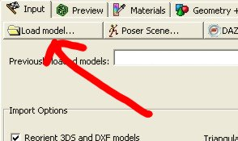
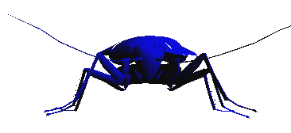
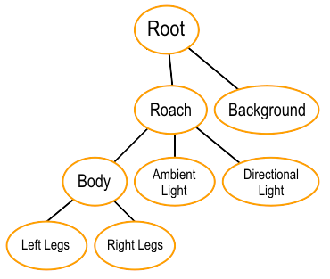
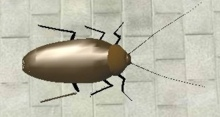
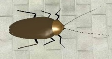
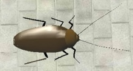
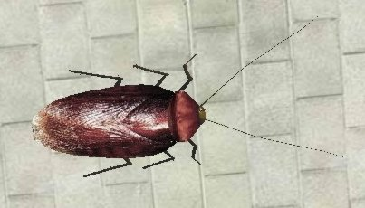
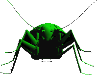
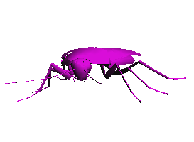
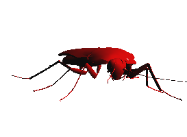

3D Model Interaction with Java 3D
Index
About
This tutorial is based on a Computer Graphics assignment for which I was given the task of creating an application in which some articulated animal would walk using a hierarchical model. I had 4 days to complete this assignment, so I had to learn Java 3D quickly, but I ended up having to read fragmented documentation, mostly focused on theory I already knew, with practical examples that were either too simple or too complex.
The objective of this tutorial is to provide a guide for writing a basic Java 3D application with a 3D model loaded from disk; it's less generic than the official Java3D application tutorial and less focused on theory than other tutorials, but more straightforward for the experienced Java developer who already knows basic CG theory and just wants to know what goes where very quickly - going deeper in the APIs is up to you.
Requirements
- JDK version 1.5 or above (the examples use Java 5 features)
- Java 3D version 1.4 or above installed
- Experience with JFC
- Basic computer graphics knowledge (3D transforms, Illumination types)
- A 3D model visualizer, like PoseRay
- A 3D model converter like 3dWin will be useful if you find some interesting 3D model in a format not supported by any Java 3D loader
Models
You can download free 3D models on TurboSquid or 3dCafe. Free models may not have the quality you are looking for, so if you are on a serious/commercial project, you should probably consider purchasing a quality model. If you really want to model your objects you can try Blender.
Visualizing the model
I will use a cockroach I downloaded from 3dCafe. You can choose another model if you will as long you know what you're doing. I will use PoseRay to visualize the model. PoseRay cannot open every 3D format, so if the format of your model is not supported by PoseRay, you will have to use some other program like 3dWin to convert it to a format PoseRay accepts. PoseRay is actually intended to work with Moray and Povray, but it works very well for the purpose of viewing 3D models.
|
1. Load the model
|
2. Check the model (shot #1)
|
|

|
|
|
3. Check the model (shot #2)
|
4. Check how this model is branched
|
 |
These are the pieces that form the complete model. You will have to analyze how your model is branched to see if you can animate or interact with it as you plan. Every component of the model has a name - let it be the parts of your main subject or just other components from the scene. You can get these names on your program, but it's easier to check which part is which here. You can use the update function if the names aren't descriptive enough. You will need to know the name of every part if you plan to texturize or animate them independently.
In the end, all that matters is that you save your file in a format that Java loaders will recognize. Preferably, save it in the Wavefront .obj or Lightwave .lwo format because Java 3D comes with loaders for these file formats by default. Other loaders are available, but you will have to download them separately. Other Java3D loaders
Loading the model
Wavefront .obj format
import java.io.FileReader;
import java.io.IOException;
import com.sun.j3d.loaders.Scene; // Contains the object loaded from disk.
import com.sun.j3d.loaders.objectfile.ObjectFile; // Loader of .obj models
public static Scene loadScene(String location) throws IOException {
ObjectFile loader = new ObjectFile(ObjectFile.RESIZE);
return loader.load(new FileReader(location));
}Lightwave .lwo format
import com.sun.j3d.loaders.lw3d.Lw3dLoader; // Loader of .lwo models
public static Scene loadScene(String location) throws IOException {
Lw3dLoader loader = new Lw3dLoader();
return loader.load(new FileReader(location));
}}Recommended reading: ObjectFile javadoc, Lw3dLoader javadoc.
Basic setup
Now that you know how to load the model let's see how it will look on your program before proceeding to further manipulation. The most important class of this example is the SimpleUniverse, which saves you from having to configure the view of your scene. A directional light is added to allow you to view your object (no light and you will see a plain black). You can view the source in html or download it .

Roach as seen on the example program
Recommended reading: SimpleUniverse javadoc
Getting the scene components
We need to obtain a reference to every body part we need to manipulate (or just scene component, if you are not using a model of an animal). If you want to create a variable for every component and assign a meaningful name to each one, you will have to know what name maps to what component. The following piece of code demonstrates how to list the name of every named object from the scene:
import javax.media.j3d.Shape3D;
void listSceneNamedObjects(Scene scene) {
Map<String, Shape3D> nameMap = scene.getNamedObjects();
for (String name : nameMap.keySet()) {
System.out.printf("Name: %s\n", name);
}
}Have in mind that every Shape3D is already part of the BranchGroup of the scene you have loaded. If you want to create another graph with your custom hierarchy, you will have to get a reference to one specific Shape3D and then remove it from the BranchGroup:
import javax.media.j3d.BranchGroup;
/* Obtains a reference to a specific component in the scene */
Shape3D eyes = nameMap.get("eyes");
/* The graph that still contains a reference to "eyes" */
BranchGroup root = scene.getSceneGroup();
/* Removes "eyes" from this graph */
root.removeChild(eyes);
/* Now you are free to use "eyes" in your custom graph */Always remember you cannot add a component to more than one graph. If one component is already part of a graph and you try to add it to another, you will get a MultipleParentException. If you need the same component in more than one graph, you can clone them.
Transformations
Basic transformation steps:
- Add the parts you want to transform to a TransformGroup;
- Apply the TransformGroup.ALLOW_TRANSFORM_WRITE capability to the group if it wasn't set;
- Create or use some previously created instance of Transform3D;
- Configure this instance of Transform3D as / if necessary;
- Apply this Transform3D instance on the TransformGroup instance.
That implies you will have to keep references to instances of these classes in order to transform specific nodes of your graph.
The following piece of code demonstrates translation, rotation on multiple axis and non uniform scaling. It uses code created on previous sections.
import javax.vecmath.Vector3f;
import javax.vecmath.Vector3d;
import javax.media.j3d.TransformGroup;
import javax.media.j3d.Transform3D;
Map<String, Shape3D> nameMap = scene.getNamedObjects();
/* Get the node you want to transform */
Shape3D wing = nameMap.get("wing");
/* Add it to a TransformGroup */
TransformGroup transformGroup = new TransformGroup();
transformGroup.addChild(wing);
/* Necessary to allow this group to be transformed */
transformGroup.setCapability(TransformGroup.ALLOW_TRANSFORM_WRITE);
/* Accumulates all transforms */
Transform3D transforms = new Transform3D();
/* Creates rotation transforms for x, y and z axis */
Transform3D rotX = new Transform3D();
Transform3D rotY = new Transform3D();
Transform3D rotZ = new Transform3D();
rotX.rotX(15D); // +15 degrees on the X axis
rotY.rotY(30D); // +30 degrees on the Y axis
rotZ.rotZ(-20D); // -20 degrees on the Z axis
/* Combines all rotation transforms */
transforms.mul(rotX, rotY);
transforms.mul(transforms, rotZ);
/* Translation: translates 2 on X, 3 on Y and -10 on Z */
Vector3f translationVector = new Vector3f(2F, 3F, -10F);
transforms.setTranslation(translationVector);
/* Non uniform scaling: scales 3x on X, 1x on Y and 2x on Z */
Vector3d scale = new Vector3d(3D, 1D, 2D);
transforms.setScale(scale);
/* Apply all transformations */
transformGroup.setTransform(transforms);
Recommended reading: Transform3D javadoc, TransformGroup javadoc
Hierarchical Model
Now that you have access to all components separately, you can build your custom hierarchical graph.
If you have been using Swing or AWT, you are already familiar with the hierarchical model. For instance, you can have a JFrame, which then adds a JPanel, which then adds a JLabel and so forth. Many properties applied on the root are propagated to children, like the isVisible() property. With a 3D model, all transforms and texturizations will be applied to all children (subgraphs). Imagine if you had to apply the same transform over and over to many model parts just to make one movement?
Java 3D has a class called Group, which is basically an N-Tree: every children has only one parent and an arbitrary number of children. You will use subclasses of Group to create your scenes. Java 3D has also the Leaf class, which is used to construct objects on the tree which wouldn't make sense with children, like background, camera, behaviour, etc.

Hierarchical model of the scene
I will use the TransformGroup class as the default node for building the graph. You may use other subclasses of Group if you have other needs. You may want to keep a reference of every TransformGroup you create if you are going to do some interaction (like making a cockroach walk).
Note that the code above suffers from the same flaws of programatic GUI construction. You can define the graph in XML and create a custom parser if you need reusability. If possible, you can also edit the model graph in a model editor to avoid having to perform these steps on your program.
Hierarchical construction of the graph
TransformGroup getCockroach(Scene scene) {
/* Obtain the scene's BranchGroup, from which components are removed */
BranchGroup root = scene.getSceneGroup();
Map<String, Shape3D> nameMap = scene.getNamedObjects();
/* Remove all children (you don't want a MultiParentException) */
root.removeAllChildren();
/* Construct the groups */
TransformGroup leftLegs = new TransformGroup();
TransformGroup rightLegs = new TransformGroup();
TransformGroup body = new TransformGroup();
TransformGroup roach = new TransformGroup();
/* Build the graph --> LEFT LEGS */
leftLegs.addChild(nameMap.get("luplegf"));
leftLegs.addChild(nameMap.get("luplegm"));
leftLegs.addChild(nameMap.get("luplegr"));
leftLegs.addChild(nameMap.get("lmidlegf"));
leftLegs.addChild(nameMap.get("lmidlegm"));
leftLegs.addChild(nameMap.get("lmidlegr"));
leftLegs.addChild(nameMap.get("llowlegf"));
leftLegs.addChild(nameMap.get("llowlegm"));
leftLegs.addChild(nameMap.get("llowlegr"));
leftLegs.addChild(nameMap.get("lfootf"));
leftLegs.addChild(nameMap.get("lfootm"));
leftLegs.addChild(nameMap.get("lfootr"));
/* Build the graph --> RIGHT LEGS */
rightLegs.addChild(nameMap.get("ruplegf"));
rightLegs.addChild(nameMap.get("ruplegm"));
rightLegs.addChild(nameMap.get("ruplegr"));
rightLegs.addChild(nameMap.get("rmidlegf"));
rightLegs.addChild(nameMap.get("rmidlegm"));
rightLegs.addChild(nameMap.get("rmidlegr"));
rightLegs.addChild(nameMap.get("rlowlegf"));
rightLegs.addChild(nameMap.get("rlowlegm"));
rightLegs.addChild(nameMap.get("rlowlegr"));
rightLegs.addChild(nameMap.get("rfootf"));
rightLegs.addChild(nameMap.get("rfootm"));
rightLegs.addChild(nameMap.get("rfootr"));
/* Build the graph --> REMAINING BODY */
body.addChild(nameMap.get("antena"));
body.addChild(nameMap.get("antenar"));
body.addChild(nameMap.get("wing"));
body.addChild(nameMap.get("abdomen"));
body.addChild(nameMap.get("head"));
body.addChild(nameMap.get("prothorx"));
body.addChild(nameMap.get("eyes"));
body.addChild(nameMap.get("lpalp"));
body.addChild(nameMap.get("rpalp"));
/* Build the graph --> ROACH */
roach.addChild(leftLegs);
roach.addChild(rightLegs);
roach.addChild(body);
/* Enable transform capability (it is not enabled by default) */
enableTransformCapability(leftLegs, rightLegs, body, roach);
return roach;
}
void enableTransformCapability(TransformGroup... parts) {
for (TransformGroup part : parts) {
part.setCapability(TransformGroup.ALLOW_TRANSFORM_WRITE);
}
}Note that I have declared the transform groups locally, but on your program you will have to declare them globally or keep a reference to them somewhere if you plan to add interaction to your model. We will configure the camera (actually a view) and add lights later.
I did a fairly simple hierarchy because the movement this cockroach will do is just as simple. In my assignment I had to do an interaction in which the legs would articulate, which implied in a different (i.e. more complex) setup for the hierarchy of the legs.
Appearance
The loaded cockroach is quite pale since no material descriptors were associated with it, but this is not a problem, as you can define your textures for each component of your graph. You must read the Material javadoc to understand what is being done here.
To save some effort, I will declare some constants for ambient, emissive and specular light colors. The user may choose the diffuse color - the light which is emitted when the object is under the influence of some light.
import javax.vecmath.Color3f;
private static final Color3f SPECULAR_LIGHT_COLOR = new Color3f(Color.WHITE);
private static final Color3f AMBIENT_LIGHT_COLOR = new Color3f(Color.LIGHT_GRAY);
private static final Color3f EMISSIVE_LIGHT_COLOR = new Color3f(Color.BLACK);
Now you can create a method that returns an Apperance based on a given Color:
import javax.media.j3d.Material;
import javax.media.j3d.Appearance;
Appearance getAppearance(Color color) {
Appearance app = new Appearance();
app.setMaterial(getMaterial(color));
return app;
}
Material getMaterial(Color color) {
return new Material(AMBIENT_LIGHT_COLOR,
EMISSIVE_LIGHT_COLOR,
new Color3f(color),
SPECULAR_LIGHT_COLOR,
100F);
}
It's possible to use an image as a texture, but there are some constraints: the image must be equal in width and height and must be a power of 2. If you have ever used Swing, you know you have to pass an instance of Component to MediaTracker if you want to track the loading of an image. Loading a texture uses a similar process:
import javax.media.j3d.Texture2D;
import com.sun.j3d.utils.image.TextureLoader;
Appearance getAppearance(String path, Component canvas, int dimension) {
Appearance appearance = new Appearance();
appearance.setTexture(getTexture(path, canvas, dimension));
return appearance;
}
Texture getTexture(String path, Component canvas, int dimension) {
TextureLoader textureLoader = new TextureLoader(path, canvas);
Texture2D texture = new Texture2D(Texture2D.BASE_LEVEL,
Texture2D.RGB,
dimension,
dimension);
texture.setImage(0, textureLoader.getImage());
return texture;
}
Applying the material:
Scene cockroach = getSceneFromFile("ROACH_mod.obj");
Map<String, Shape3D> nameMap = cockroach.getNamedObjects();
Color brown = new Color(165, 42, 42);
Appearance brownAppearance = getAppearance(brown);
nameMap.get("wing").setAppearance(brownAppearance);
|
A material responds to different light positions
|
||
|

|

|

|
As far as I've tested, if you assign a texture instead of a material, the object will not respond to different light configurations, instead it will look like being constantly illuminated.

Roach with a texture
Lights
As you have seen here, we still need to add two lights and one camera (a view). If you have read the basic setup, you have seen a directional light being added to the root of the scene. It's interesting to make the light go with the roach wherever it goes if you don't want it to get completely black after walking out of the reach of the light - on this case you will need to add your lights as leafs on the same node which contains the object you want to illuminate. On the other hand, if you want your object to become shadowed as it moves, you should add the lights to a node other than the one you used to add the model.
Except from finding the right vector to point the light to your object, creating and configuring lights is mostly simple. The following figure demonstrates how to construct an ambient light and a directional light:
import javax.media.j3d.DirectionalLight;
import javax.media.j3d.AmbientLight;
Color3f directionalLightColor = new Color3f(Color.BLUE);
Color3f ambientLightColor = new Color3f(Color.WHITE);
Vector3f lightDirection = new Vector3f(-1F, -1F, -1F);
AmbientLight ambientLight = new AmbientLight(ambientLightColor);
DirectionalLight directionalLight = new DirectionalLight(directionalLightColor, lightDirection);
Bounds influenceRegion = new BoundingSphere();
ambientLight.setInfluencingBounds(influenceRegion);
directionalLight.setInfluencingBounds(influenceRegion);
Why do you need an influence region? For the same reason you need clipping: to avoid doing useless calculations. See the Light javadoc for more information.
Camera
If you want to view your scene on different angles, you will need a camera. Java 3D uses a view based model - there are no camera objects, but a ViewPlatform object. Whenever you want to change the view of your scene, all you have to do is to change parameters on the ViewPlatform object. If you are using SimpleUniverse to facilitate the view configuration of your program, you don't need to add any ViewPlatform instance to the root node because SimpleUniverse has already added that for you.
The ViewPlatform created by SimpleUniverse is inside a MultiTransformGroup, which you can obtain via ViewingPlatform. The following code demonstrates how to obtain this MultiTransformGroup and use it to change the view of the scene:
import com.sun.j3d.utils.universe.ViewingPlatform;
/* You don't have to create a ViewingPlatform if you are using SimpleUniverse */
ViewingPlatform vp = universe.getViewingPlatform();
/* You don't need to add the VP to a TransformGroup because the VP is already added in a MultiTransformGroup;
0 is the topmost TransformGroup */
TransformGroup vpGroup = vp.getMultiTransformGroup().getTransformGroup(0);
/* You can transform the view platform as you do with other objects */
Transform3D vpTranslation = new Transform3D();
Vector3f translationVector = new Vector3f(1.9F, 1.2F, 6F);
vpTranslation.setTranslation(translationVector);
vpGroup.setTransform(vpTranslation);
|
Example: Translation vectors used on the ViewPlatorm
|
|
|

|

|
|
0.0, -1.2, 6.0
|
1.9, 1.2, 6.0
|
|

|
|
|
0.0, 1.2, 6.0
|
-1.9, 1.2, 6.0
|
Do not confuse ViewPlatform with ViewingPlatform - the latter is a convenience class used to "set up the view side of the graph" - it contains a ViewPlatform.
Recommended reading: ViewingPlatform javadoc, ViewPlatform javadoc
Background
Unless you want your background to be plain black, you should specify one. Just remember to always add the background to the root node of your scene; add it anywhere else and you will get an undesirable IllegalSharingException.
Color background
import javax.media.j3d.Background;
/* A dull gray background */
Background background = new Background(new Color3f(Color.LIGHT_GRAY));
/* incluencRegion is a BoundingSphere. See the "Lights" section for details */
background.setApplicationBounds(influenceRegion);
/* root is a BranchGroup, root node of your Scene object */
root.addChild(background);
Image background
TextureLoader t = new TextureLoader("leaves.jpg", canvas);
Background background = new Background(t.getImage());
background.setImageScaleMode(Background.SCALE_REPEAT); // Tiles the image
background.setApplicationBounds(influenceRegion);
root.addChild(background);This static background is quite boring. If you are looking for something more interesting, such as a celestial sphere, you should use apply a geometry to a background. You can find examples on Java2S website.
Recommended reading: Background javadoc
Interacting with the model
Now it's time to use the TransformGroup references you've kept a while ago. You will use them to control the movement of the model. The cockroach will do a very silly movement: the left legs will move forward while the right legs stand still, then the right legs move forward while left legs stand still; the body will always move a little bit forward on every movement. It's far from realistic, but you can derive more complex movements if you learn this one. (If you're concerned, as far as my assignment, the movement was more complex than that...)
The class Behavior will be used to interact with the model. The Behavior class is like a listener - you have to implement it to achieve the desired reaction. It has to be activated every time it's used, or it won't react to the next stimulus. The stimulus used on this section will be a key press, but you can use many others - check WakeupCriterion's direct known subclasses to check for other options. After implementing your Behavior subclass, all you have to do is to add it on the node you want to animate.
Instance variables
/** Groups that will be animated. */
TransformGroup[] groups;
/** Used to transform the groups you will animate. */
Transform3D[] transforms;
/** Used to translate the groups you will animate. */
Vector3f[] translations;
/** Type of event for which groups will react. */
WakeupOnAWTEvent wake;
/** Increments 1 every time the user hits a key. */
int hitCount;
/** Decides which group will be animated based on the hitCount. */
int bodyPartIndex;Constructor
SimpleTripodMovement(TransformGroup... groups) {
this.groups = groups; // You can add a groups count security check if you will
wake = new WakeupOnAWTEvent(KeyEvent.KEY_PRESSED); // You decide which key later
translations = new Vector3f[groups.length];
transforms = new Transform3D[groups.length];
for (int i = 0; i < groups.length; i++) {
translations[i] = new Vector3f(0F, 0F, 0F);
transforms[i] = new Transform3D();
}
}Implementation of initialize
public void initialize() { // Overriden method
wakeupOn(wake); // Inherited method
}Implementation of processStimulus
public void processStimulus(Enumeration enumeration) {
KeyEvent k = (KeyEvent) wake.getAWTEvent()[0];
/* Moves only if the key pressed is the right directional key and
if the hit count is a multiple of 4 */
if ((k.getKeyCode() == KeyEvent.VK_RIGHT) && (hitCount++ % 4 == 0)) {
/* Selects the body part to be moved */
bodyPartIndex = (bodyPartIndex + 1) % 3;
/* Moves 0.1 on Z axis */
translations[bodyPartIndex].set(translations[bodyPartIndex].x,
translations[bodyPartIndex].y,
translations[bodyPartIndex].z + 0.1F);
transforms[bodyPartIndex].setTranslation(translations[bodyPartIndex]);
groups[bodyPartIndex].setTransform(transforms[bodyPartIndex]);
}
/* If you don't put it here, it won't respond the next time you press a key */
wakeupOn(wake);
}Applying the behavior
/**
* Adds a simple tripod movement to the given roach.
*
* @param parts parts that will be animated
* @param roach supernode of parts
* @param bounds world bounds, the smae used for lighting
*/
void addBehavior(TransformGroup[] parts, TransformGroup roach, Bounds bounds) {
Behavior behavior = new CockroachBehavior(parts);
/* Behavior will not work if you don't set the scheduling bounds! */
behavior.setSchedulingBounds(bounds);
roach.addChild(behavior);
}As you have probably noticed, this class is tightly coupled with the objects it animates, but that is predictable; from Behavior javadoc: The application must provide the Behavior object with references to those scene graph elements that the Behavior object will manipulate. The application provides those references as arguments to the behavior's constructor when it creates the Behavior object. Alternatively, the Behavior object itself can obtain access to the relevant scene graph elements either when Java 3D invokes its initialize method or each time Java 3D invokes its processStimulus method.
Recommended reading: Behavior javadoc
Resources
- Cockroach object [you may have to convert it]
- Cockroach wings texture
- Cockroach head texture
- Ground texture
- Leaves background
- Source code [you will need to download the model separately]
- Executable JAR [you will need to download the model separately]
{kind=link}
{kind=link}
{kind=link}
{kind=link}